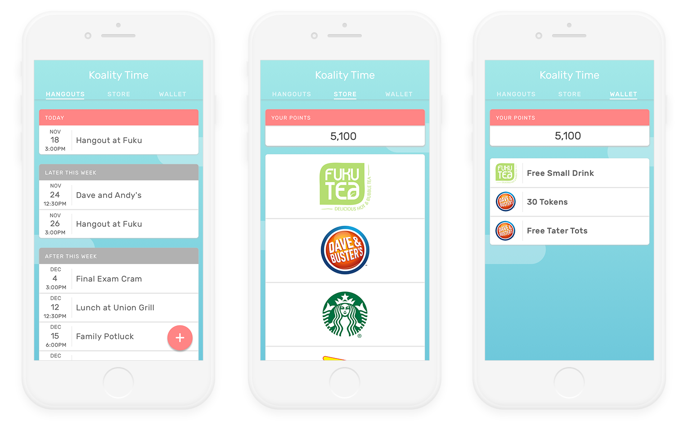
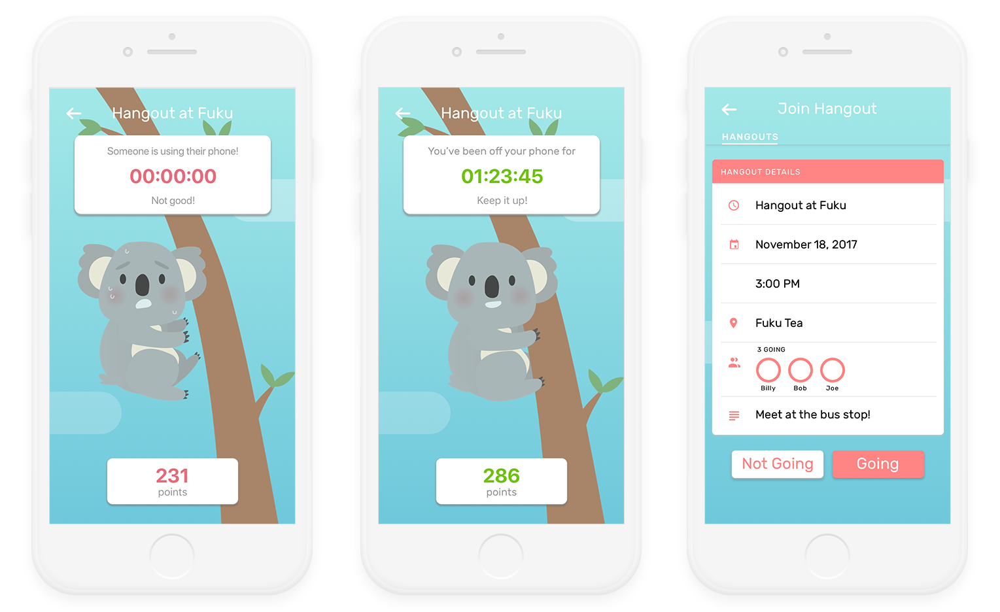

Koality Time
UX/UI
March 2018
Contributions
Visual Design
Wireframing
User Research
User Testing
Overview
With smartphone usage consistently on the rise, it can be difficult to have in-person conversations with people so glued to their mobile devices. Koality Time is an app that incentivizes putting one's phone away and engaging with others in social hangouts. By providing in-app currency that can be exchanged at real-life vendors, users improve their social experiences while obtaining rewards that are worthwhile.


Defining the Problem Space
Early on, we decided that we wanted to improve the social experience between college students, especially since we each noticed people's attachments with smartphones during hangouts. We discussed a variety of ways to combat this issue, including creating "bets" between a hangout's participants, or posting embarrassing messages to social media accounts of those who used their phones. Our team settled on incentivizing users with rewards that can be exchanged for real-life goods, such as a drink at one's local coffeeshop.

User Flow and Paper Prototyping
We created a quick mockup of a storyboard that we wanted to follow, which included how we wanted the user to go through the app. Our initial struggles were determining how to get multiple users into one "hangout" room, and whether or not every participant needed the app. We settled on including a code for hangout creators to send out to their friends—their friends would then have to type in the code through the app on their own phones. When the hangout starts, unlocking one's phone would cause the group to lose points the longer it was open.


High-Fidelity Prototyping
Over the next few weeks, we moved from paper prototyping to creating higher-fidelity mockups in Sketch. We established a style guide that used vibrant, pastel colors and fonts with more rounded edges to have a more friendly vibe to the app. To test the prototypes, we gave participants a variety of tasks, such as creating a hangout, joining a hangout, spending in-app points, or redeeming coupons in order to see if the app's interface was easy to understand. While we thought our app made the "Wallet" and "Store" interfaces clearer and easier to navigate to, our testers still had trouble distinguishing them and figuring out how to get to them.

Improving and Creating Interactions
Our team's next step was to improve the "Wallet" and "Store" interactions, so we created tabs at the top of the app in order to fully distinguish them. Users could swipe back and forth to interact with the "Hangouts", "Wallet", and "Store" screens. Upon testing these changes, we found that users could more easily understand the different between the screens and utilize the app's in-game rewards (found in "Wallet") to spend at the "Store". With our app's flow seemingly understandable to new users, we created a more fully-interactive prototype in Principle.

Post-Project Thoughts
Koality Time is ultimately one of many methods to combat overusage of smartphones in social contexts. Given more time, our team would have created a functional prototype in Objective-C in order to further test user interactions. Nevertheless, we feel that given our time constraints we designed a strong mockup of a product that could improve social conversations and obsessions with our phones. It would also be interesting and insightful to explore our earlier brainstormed ideas, such as the "betting" incentive or publicized social media messages to see which incentive is most effective in reducing smartphone usage.